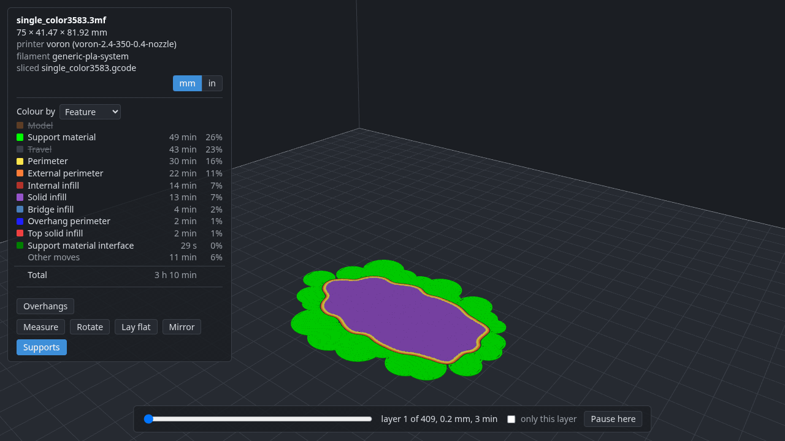

deliA CLI-first slicer front end for 3D printing
A print is a deli.toml in a folder, sliced in-process by PrusaSlicer's engine with
OrcaSlicer's printer profiles, neither slicer installed. Plain text and --json out, so it is simple
to use directly or through an AI. A small web view for what needs seeing.
deli view, and sending it.deli setup # once: tab completion, your printer, and how to reach it
deli add 3DBenchy.stl
deli slice # how long it will take, and how much filament
deli view # the sliced Benchy in your browser, layer by layer
deli send --print # to the printer, and start itWhat it is
- Lives in your shell
Each command does one thing to the print in the current directory and exits. No REPL, no TUI, no window to keep open.
- A print is a text file
deli.tomlholds the parts, the profiles and only the settings you changed. Come back months later anddeli send --printprints the same thing. - No slicer to install
PrusaSlicer's
libslic3ris compiled in, and the printer profiles are converted from OrcaSlicer's repository. The printers Orca knows are adeli setupaway. - Settings by name
deli set infill 20%. When the name is not quite right, deli suggests the ones that are close. Defaults never get in the way. - Simple directly or through an AI
Plain text and
--jsonout, exit codes you can branch on, and a skill that briefs an assistant. Nothing in deli calls a model or needs one. - Your printer, not a cloud
Sends to Klipper's Moonraker, Elegoo's and OctoPrint's own interfaces on your network. No account, no telemetry.
Install
On Linux, in WSL on Windows, or on macOS, in one line. It installs the release built for this machine with uv.
curl -LsSf https://raw.githubusercontent.com/dcruver/deli-slicer/main/install.sh | shEach release has a wheel per platform if you would rather install one yourself. Then deli setup.
Update
deli updates itself. deli status mentions a newer release when there is one.
deli update --check # what the latest release is, and whether you have it
deli update # install it over the deli you are runningA print is a text file you can read
Everything about the print is here, and nothing that stayed at its default. Edit it, comment it, commit it.
# deli.toml
[printer]
name = "voron-2.4-350-0.4-nozzle"
[[part]]
file = "3DBenchy.stl"
scale = [1.5, 1.5, 1.5]
rotate = [0, 0, 45]
at = [60, 80]
[settings]
fill_density = "20%"
support_material = 1
support_material_style = "organic"Models from the web, and what needs seeing
deli add takes a model's address: a file, a zip, a page linking to files, or a Printables model, whose files it lists and fetches through the site's own API.
deli view shows the sliced G-code in your browser: every move coloured by what it is for, a slider through the layers, and tools that write the deli command you could have typed.Where it stands
Early. Everything above works. deli converts and slices for most of the printers OrcaSlicer knows, but has printed on two so far: a Voron 2.4 and an Elegoo Centauri Carbon. The README's Not done yet says what is missing, and an issue about your printer is welcome.